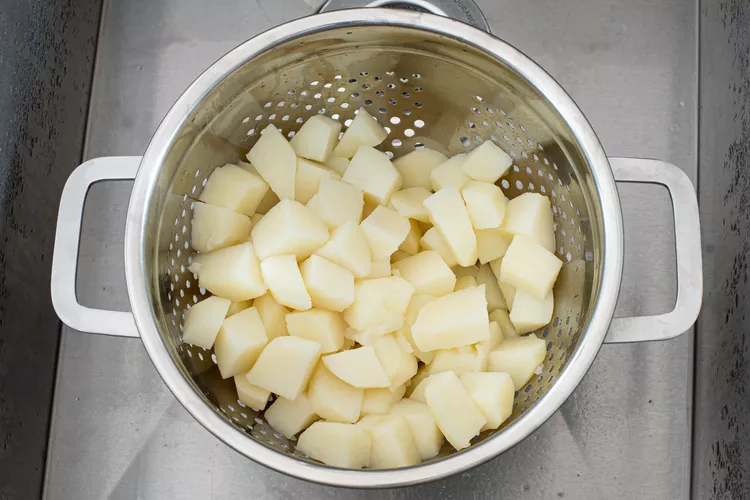
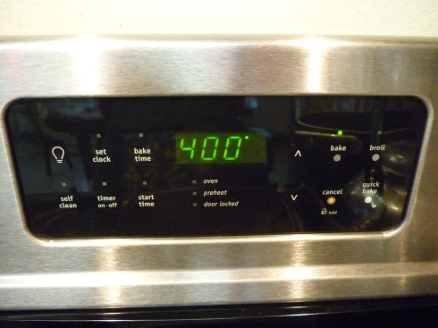
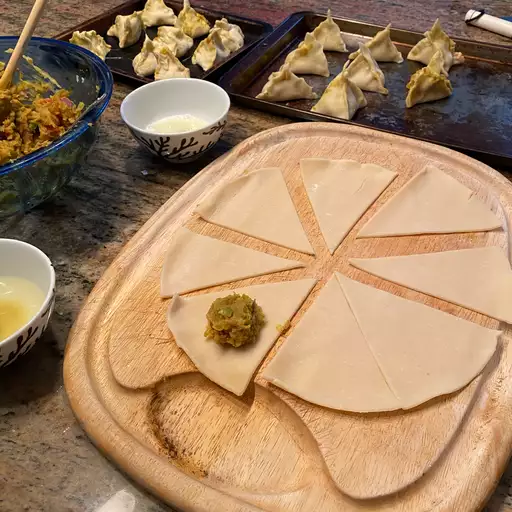
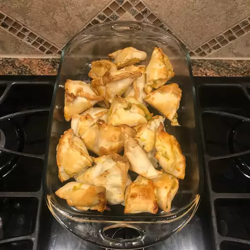
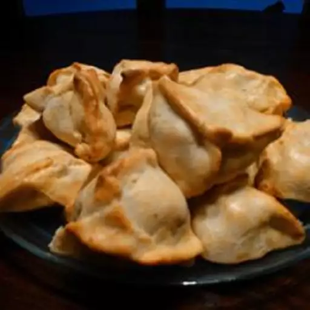

Easy Baked Indian Samosas

These baked samosas have all the flavor and heartiness without frying. A healthier version that's just as delicious as traditional fried samosas.
Ingredients
- 4 potatoes, peeled and cubed
- ¼ cup vegetable oil
- 2 small onions, finely chopped
- 3 tablespoons coriander seed
- 1 tablespoon curry powder
- 1 (1 inch) piece fresh ginger, grated
- 1 teaspoon salt
- 1 teaspoon ground turmeric
- 1 teaspoon ground cumin
- ½ teaspoon ground allspice
- ½ teaspoon cayenne pepper
- ⅛ teaspoon ground cinnamon
- 2 Roma (plum) tomatoes, finely chopped
- ½ cup frozen peas
- 2 (14.1 ounce) packages double-crust pie crusts, thawed
- 2 large egg whites, beaten
Instructions
- Boil potatoes in salted water for 20 minutes until tender. Drain, mash coarsely, and set aside. 
- Preheat the oven to 400°F (200°C). 
- Heat oil and sauté onions with spices for 5 minutes. Add tomatoes and peas, then mix with mashed potatoes. Let cool completely. 
- Cut each pie crust into 8 triangles. Place filling at the wide end, fold corners over to form triangles, and pinch edges to seal. 
- Brush with egg whites and bake for 15 minutes until golden brown. 